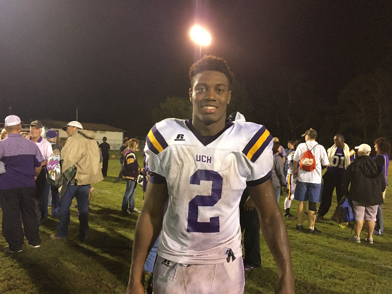

2016 Alachua County Football Webpage
By Ryan Summers
The 2016 season may have come to a close for all of the local teams from Alachua County, but this webpage is a source where you can come and compare the area's top gridiron talents. I hope you enjoy
The 2016 Alachua County high school football season
The high school football season in Alachua County has come to an end, but this page will allow you to see how your favorite team faired. Photo by: Ryan Summers

Union County RB Charles Strong
Strong ran for 322 yards and 3 touchdowns against Hawthorne on October 6. His team won the game 27-26. Photo by: Ryan Summers
Eastside Football
Eastside Rams head coach Cedderick Daniels addressing his team after the team's only win of the season on October 8. The Rams defeated Lake Weir 42-13. Photo by: Ryan Summers
A night to remember
Hawthorne quarterback Tazmin James was named Homecoming king during halftime of his final home game as a Hornet. James led his team to a 26-23 win over Chiefland in the homecoming matchup. Photo by: Ryan Summers
Trenton RB Montrez Jackson
In the first round of the FHSAA playoffs November 11, Trenton running back Montrez Jackson ran for 172 yards and three touchdowns. Trenton won 50-14. Photo by: Ryan Summers